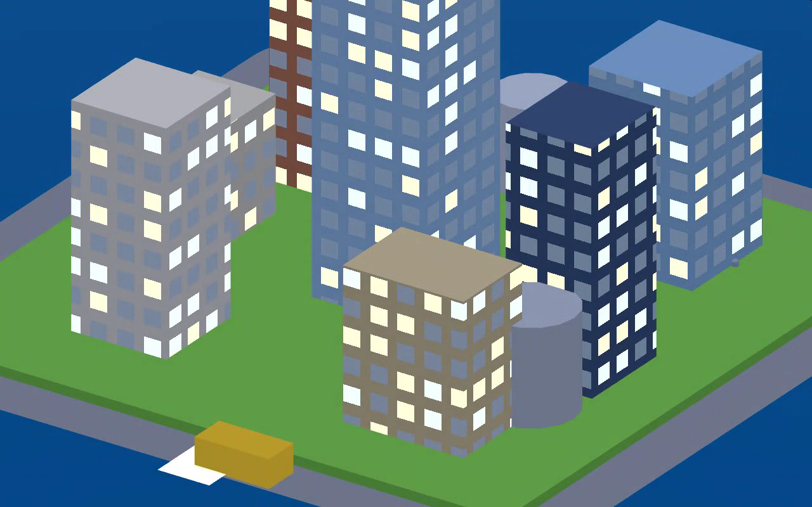

A living city engine
demo · everything below is rendered live
A look at what we've been building: a real-time city engine — isometric city views with living traffic, people, interactive water, a full day/night cycle, and switchable art styles. Nothing here is a drawn illustration; every frame is the engine running in a browser.
▶ Try it live (desktop)
Opens the actual engine in your browser. On a computer, use the keyboard:
C change city · G new layout · T time of day ·
1/2/3 & 7/8 art style · 4/5/6 camera ·
drag the water to ripple it. (Live engine is best on desktop.)
The tour — one continuous take
Three cities, one engine
Hours of the day



What this could do for a game
- A signature look, consistently. The art direction is rules in the engine — palette, shading, line treatment — so every building, vehicle and screen matches. No more one-off art that doesn't fit together.
- A city that feels alive. Day/night, rush hours, lit windows, ambient traffic, water that reacts to touch — atmosphere a static map can't give, essentially free at runtime.
- Concept art in, game assets out. There's also a tool that takes any image and converts it into palette-consistent pixel art at a chosen bit-era, exporting game-ready files.
- Any city, any style. The generator above already builds whole unique districts — recognizable landmarks included — from one seed number. Every city is a shareable address.
What's coming next
- Dynamic sun shadows sweeping with the day/night cycle
- Weather and seasons — rain on that water, snow on those rooftops
- Traffic that drives the generated streets
- Coastlines and harbors (and a statue who gets her own island)
Everything above runs in a browser at 120 fps. If any of this looks useful for your project, let's talk — it's built to be adapted.